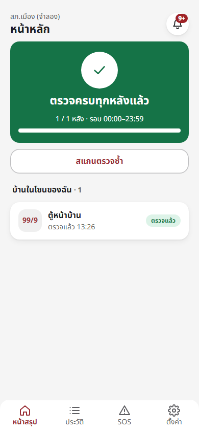
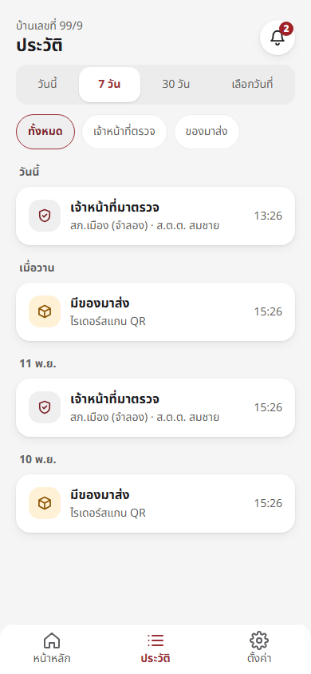
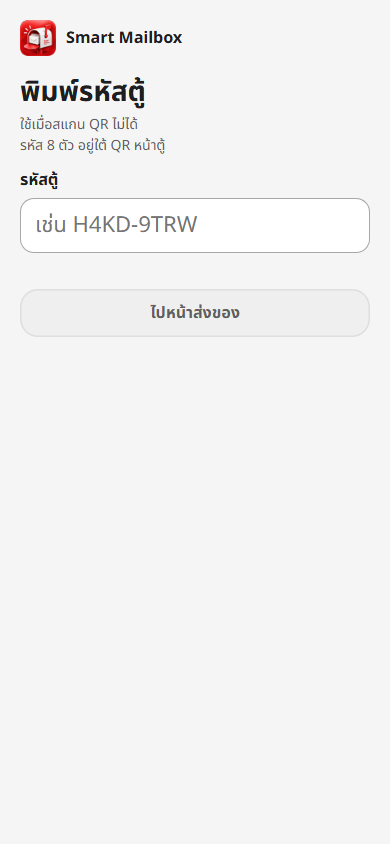
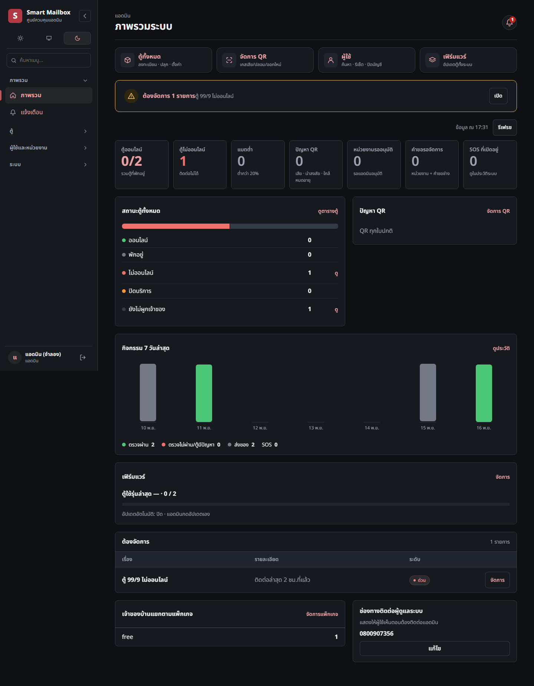

ตู้จดหมาย ที่ยืนยันได้ว่า มีคนมาตรวจจริง
เจ้าหน้าที่ · เจ้าของบ้าน · หัวหน้าหน่วยงาน · แอดมิน · ไรเดอร์ ใช้เว็บแอปเดียว — ทุกผลตัดสินที่เซิร์ฟเวอร์ ไม่ใช่ที่ตู้


การตรวจที่ปลอมได้
ไม่ใช่การตรวจ
สมุดลงชื่อหน้าบ้านพิสูจน์ได้แค่ว่า “มีคนเขียน” — ไม่ได้พิสูจน์ว่าเขายืนอยู่ตรงนั้นจริง ๆ ตอนนั้น
เจ้าหน้าที่ — ยืนยันว่ามาตรวจจริง
ต้องพิสูจน์ว่ามาตรวจจริง ไม่ใช่ถ่ายรูป QR ไปสแกนจากที่อื่น
ไรเดอร์ — แจ้งส่งของได้ทุกเวลา
ไม่ต้องมีบัญชี ไม่ต้องติดตั้งแอป และไม่เก็บข้อมูลตัวตน
เจ้าของบ้าน — ขอความช่วยเหลือเร็ว
ส่งถึงเจ้าหน้าที่ในโซนภายในไม่กี่วินาที แม้ไม่มีใครเฝ้ามือถือ
สอง QR
ที่ต้องมาบรรจบกัน
QR หน้าตู้พิสูจน์ว่า “ตู้นี้” — QR ประจำตัวพิสูจน์ว่า “คุณอยู่ตรงนี้ เดี๋ยวนี้” ระบบจะผ่านก็ต่อเมื่อทั้งสองอย่างตรงกัน และยังไม่หมดอายุ
QR ประจำตู้
ลายเซ็นของระบบ · ผูกกับตู้ โซน และสถานะเปิดบริการ
QR ประจำตัว
ออกโดยเซิร์ฟเวอร์ · ผูกกับงานของตู้นั้น · เปลี่ยนทุก ~9 วิ
ผ่าน / ไม่ผ่าน
ตู้อ่านอย่างเดียว — ไม่มีสิทธิ์ตัดสินผล
ขั้นที่ตู้ต้องอ่าน QR ของเจ้าหน้าที่ คือสิ่งที่พิสูจน์ว่าคนนั้นอยู่หน้าตู้จริง
ลายเซ็นระบบ + โซน + สถานะเปิดบริการ
ออกใหม่ทุก ~9 วิ · ผูกกับงานของตู้นั้น
ตู้แค่อ่าน — ไม่มีสิทธิ์ให้ผ่านเอง
60 วินาที
ของการตรวจหนึ่งครั้ง
สแกน QR หน้าตู้
0 วิเซิร์ฟเวอร์เช็กลายเซ็น · โซน · เวลาตรวจ · ตู้เปิดและออนไลน์
สร้างงาน 60 วินาที
1–3 วิตอบ long-poll ที่ตู้ถืออยู่ → ตู้ตื่นทันที ไม่ต้องรอรอบถัดไป
ตู้พร้อมรับ
≤ 60 วิเปิดกล้อง + เสียงปี๊บ · แอปขอ QR ประจำตัวจากเซิร์ฟเวอร์
ยื่น QR ให้กล้องตู้
15 วิอายุ 15 วินาที · เปลี่ยนทุก ~9 วิ · สแกนพลาดได้ 3 ครั้ง
เซิร์ฟเวอร์ตัดสิน
8 วิผ่าน → บันทึก + แจ้งเจ้าของ · ไม่ผ่าน → retry หรือแจ้งปัญหาตู้
ทุกคำตอบ
มาจากที่เดียว
self-host บน Ubuntu · nginx + systemd
long-poll อยู่ในหน่วยความจำ เพราะรัน backend ตัวเดียว
เว็บแอป PWA
- เจ้าของบ้าน · เจ้าหน้าที่
- หัวหน้า · แอดมิน · ช่างติดตั้ง
- ไรเดอร์: /public/*
ESP32-CAM + โซลาร์
- อ่าน QR แล้วส่งต่อ
- HMAC ทุกคำขอ · OTA
- หลับลึกนอกเวลาตรวจ
ศูนย์ตัดสินผล
ไม่มีแถวฐานข้อมูลหลุดออก API ตรง ๆ
ข้อมูลและหลักฐาน
ตัวช่วย ไม่ใช่หัวใจ
ล่มแล้วระบบหลักยังทำงาน
แจ้งเตือนช่องทางเดียว
เปิดใน LINE → บอกให้เปิด Safari หรือ Chrome
ไม่มี MQTT · ไม่มี OTP · ไม่มีการชำระเงิน · ไม่บันทึกออฟไลน์แล้วซิงก์ทีหลัง — ทุกคำขอจากตู้ถูกเซ็นและตรวจที่เซิร์ฟเวอร์
nginx ตัด prefix /smmb-api แต่ path ที่ตู้เซ็นยังเต็ม
ห้าบทบาท
หนึ่งผลิตภัณฑ์
1 เบอร์ = 1 บัญชี และมีได้หลายบทบาท · สิทธิ์ตัดสินที่ route และเซิร์ฟเวอร์ ไม่ใช่ที่ปุ่มในหน้าจอ
SOS ที่ไล่ตาม
คนจริง ๆ
กดค้าง 3 วินาที — ระบบไล่แจ้งเป็นขั้นจนมีคนรับ หรือจนบอกเจ้าของตามตรงให้โทร 191 / 1669
เจ้าหน้าที่ในโซน
ส่งถึงคนที่ดูแลบ้านหลังนี้ก่อน — คนแรกที่กดรับเป็นผู้ดูแลเคส และถูกล็อกที่เซิร์ฟเวอร์
ทุกคนในหน่วยงาน + หัวหน้า
ขยายวงเมื่อยังไม่มีใครรับ · บ้านอยู่หลายหน่วยงาน = แจ้งทุกหน่วยงานพร้อมกัน
บอกเจ้าของตามตรง
“โทร 191 / 1669 ทันที” — SOS ยังเปิดรอคนรับ ไม่ปิดเองเงียบ ๆ
กดค้าง 3 วินาที
เจ้าของเห็นชื่อและเบอร์ของคนที่รับเรื่อง — เฉพาะตอนที่ SOS เปิดอยู่
SOS ไม่แทน 191 — ข้อตกลงผู้ใช้เขียนเรื่องนี้ไว้ตั้งแต่สมัคร และ SOS ทำงานได้ไม่ขึ้นกับแพ็กเกจ
ส่งของถึงบ้าน
โดยไม่ต้องรู้จักคนรับ
ไรเดอร์ไม่มีบัญชีและไม่ต้องติดตั้งแอป — เปิดลิงก์จาก QR หน้าตู้ แล้วจบในสามขั้น
สแกน QR หน้าตู้
หรือพิมพ์รหัสใต้ QR · ใช้ได้ทุกเวลา ไม่ขึ้นกับเวลาตรวจ
รับ ticket อายุ 10 นาที
ใช้ได้ครั้งเดียว · จำกัด 5 ครั้งต่อชั่วโมงต่อตู้ · ล็อกแถวตู้ก่อนนับ
แจ้งเจ้าของบ้าน
เจ้าของเห็น “มีของมาส่ง” พร้อมเวลา — ไม่เห็นว่าใครเป็นคนส่ง

ปุ่มกดหน้าตู้ถูกตัดออกแล้ว — ช่องทางเดียวคือ QR หรือรหัสใต้ QR เพื่อไม่ให้ตู้ต้องมีปุ่มที่สึกหรอและถูกกดเล่น
ตู้ที่อยู่ได้
ด้วยแสงแดด
ESP32-CAM ทำหน้าที่แค่อ่าน QR แล้วส่งต่อ — งานคิดและตัดสินทั้งหมดอยู่ที่เซิร์ฟเวอร์
- Board
- ESP32-CAM (AI-Thinker) + กล้อง OV2640
- Power
- โซลาร์ 2W + 18650 ×2 ขนาน · รองรับไฟบ้าน
- Sleep
- หลับลึกนอกเวลาตรวจ · ตื่นก่อนช่วง 3 นาที
- Link
- HTTPS + HMAC ทุกคำขอ · long-poll 5 นาที
- Update
- OTA จากหน้าแอดมิน · ค่าตั้งกลาง/รายตู้
- Feedback
- เสียงปี๊บ + ไฟส่อง QR · ไม่มี LED สถานะ
ความเชื่อใจ
สร้างจากกฎที่ตรวจได้
ไม่ได้บอกว่า “ปลอดภัย” — แต่บอกว่า
ทุกข้อมีโค้ดหรือขั้นตอนรองรับ
ผลตรวจคิดที่เซิร์ฟเวอร์เท่านั้น
ตู้แค่อ่าน QR แล้วส่งต่อ · ไม่มีการบันทึกออฟไลน์แล้วซิงก์ทีหลัง
HMAC-SHA256 ทุกคำขอจากตู้
timestamp ±60 วิ + nonce กัน replay · คีย์แยกต่อ environment
log ทุกการสแกนเป็น append-only
แม้ไม่ผ่านก็บันทึก · ไม่มี route ลบหรือแก้ · trigger บังคับในฐานข้อมูล
ข้อมูลส่วนบุคคลตัดที่ server
ทุก endpoint แปลงผ่าน mapper · ห้าม SELECT * · มีเทสต์ว่า hash/token ไม่โผล่
เบอร์และที่อยู่ เห็นเฉพาะตอน SOS เปิด
ข้ามบทบาทได้เฉพาะเคสที่เปิดอยู่ · ทุกครั้งถูกบันทึกใน data access log
เก็บเท่าที่จำเป็น และลบได้จริง
รูป 30 วัน · log 1 ปี · ลบบัญชีพัก 7 วันแล้ว anonymize · แอดมินกู้ได้ภายในช่วงพัก
ออกแบบตามหลัก PDPA: เก็บน้อยที่สุด แจ้งก่อนเก็บ และให้เจ้าของข้อมูลเข้าถึง/ส่งออก/ลบเองได้ — ข้อตกลงฉบับจริงยังต้องให้ผู้เชี่ยวชาญกฎหมายตรวจก่อนเปิดใช้
404 สำหรับนอกขอบเขต · ไม่ใช่ 403
client ตัดสินจาก code ไม่ใช่ message
ระบบนี้จึงตัดข้อมูลส่วนบุคคลที่ server ก่อนออกจากระบบ
อ่านออกตั้งแต่ครั้งแรก
ที่ 390 ถึง 1440
3 โหมด: ง่าย · ปกติ · ละเอียด — เลือกความหนาแน่นของข้อมูลตามวัยและงาน

ตัวเลขที่ตรวจซ้ำได้
นับจากซอร์สใน repository
17 พฤศจิกายน 2026
unit รันในเครื่องนี้ 17 พ.ย. 2026 · e2e / Playwright อ้างจากรายงาน 13 และ 12 พ.ย. · production health ตอบ 200 (postgres / redis / push = up)
41 ตาราง · 5 บทบาท · 3 โหมด · 2 ภาษา
ซอฟต์แวร์ครบแล้ว
แต่ยังไม่เปิดนำร่อง
ห้าข้อที่เหลือเป็นงานฮาร์ดแวร์และงานปฏิบัติการ — ไม่ใช่คุณภาพของโค้ด
พร้อมแล้ว
software- ✓โฟลว์หลัก 5 บทบาทครบ · ต่อ API จริง
- ✓production 200 · postgres / redis / push up
- ✓deploy ขึ้น production · CSP + HSTS เปิด
- ✓unit 225 · e2e 170 · Playwright 9 ผ่าน
- ✓ตู้หลุด 3 นาที · เงียบ 26 ชม. · QR health รายวัน
ยังติดอยู่
hardware / ops- !ตู้จริงยังไม่เคยรันกับระบบ — ทดสอบกับตู้จำลองทั้งหมด
- !Web Push ยังไม่ยืนยันถึงมือถือจริง (SOS พึ่งช่องทางนี้ช่องทางเดียว)
- !ยังไม่มี backup อัตโนมัติ และไม่เคยซ้อม restore
- !ยังไม่มี uptime monitor นอกเครื่อง — ล่มกลางคืนไม่มีใครรู้
- !ยังไม่ตัดสินโดเมนจริง — QR ที่พิมพ์ติดตู้แล้วเปลี่ยนยาก
เกณฑ์เปิดนำร่อง: ตู้จริง 1 หลังผ่านครบวงจร + push ถึงเครื่องจริง + restore ผ่าน 1 ครั้ง + โดเมนนิ่ง
จากตู้หนึ่งหลัง
สู่หมู่บ้านหนึ่งแห่ง
พิสูจน์กับตู้จริง
- ประกอบและติดตั้ง 1 ตู้หน้าบ้านจริง
- กล้อง · เสียง · แบต · Wi-Fi ผ่านช่วงตรวจจริง
- push ถึงมือถือ Android + iPhone
- ซ้อม restore ฐานข้อมูล 1 ครั้ง
นำร่อง 1 หมู่บ้าน
- ตัดสินโดเมนจริง + พิมพ์ QR ชุดแรก
- backup อัตโนมัติ + monitor นอกเครื่อง + alert
- 10–20 ตู้ · เจ้าหน้าที่จริง 1 หน่วยงาน
- เก็บ feedback หน้างาน 4 สัปดาห์
ขยายอย่างมีวินัย
- หลายหน่วยงาน / หลายโซนพร้อมกัน
- สมาชิกในบ้าน (H15) · แพ็กเกจ · หลายตู้ต่อบ้าน
- CI รัน e2e ทุก PR + tag release
- onboarding หน่วยงานใหม่โดยไม่แก้โค้ด
ยอมรับ tech debt ได้ แต่ต้องมีเกณฑ์ผ่านทุกเฟส
ทุกการตรวจมีหลักฐาน ทุกเหตุฉุกเฉินมีคนเห็น
ระบบตู้จดหมายที่พิสูจน์ได้ว่าบ้านของคุณมีคนดูแล

docs/FLOW_AND_GAPS.md · CLAUDE.md